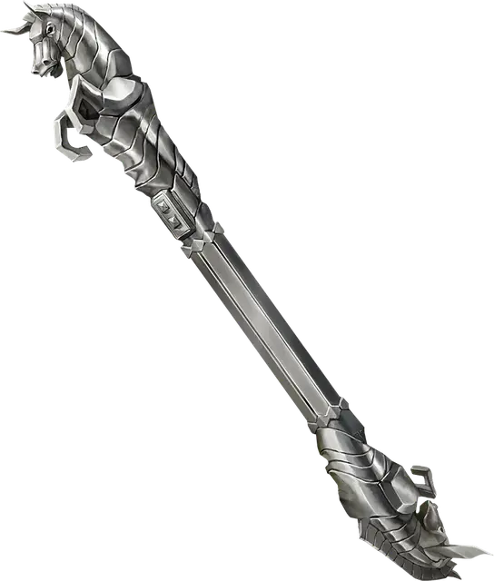

Неподвижный жезл
Immovable Rod
Жезл, необычный

Рекомендованная стоимость 400 зм
На одном конце этого жезла находится кнопка. Действием Использование вы можете нажать эту кнопку, отчего жезл магическим образом фиксируется в пространстве. До тех пор, пока вы или другое существо действием Использование не нажмёте эту кнопку снова, жезл не двигается с этого места, даже если это нарушает законы гравитации. Жезл может выдержать 8000 фунтов веса (~3600кг); если на жезл действует больший вес, он деактивируется и падает. Существо может действием Использование совершить проверку Силы (Атлетика) Сл 30, при успехе сдвигая зафиксированный жезл на расстояние вплоть до 10 футов.